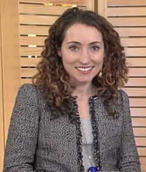

Daniela Witten | |
|---|---|
 Witten at the SiliconAngle digital community TheCube in 2018 | |
| Alma mater | Stanford University (BS, PhD) |
| Known for | An Introduction to Statistical Learning[3] |
| Spouse | Ari Steinberg |
| Parents |
|
| Relatives |
|
| Awards |
|
| Scientific career | |
| Fields | |
| Institutions | University of Washington |
| Thesis | A penalized matrix decomposition, and its applications (2010) |
| Robert Tibshirani[2] | |
| Website | www |
{kind=link}
Daniela M. Witten is an American biostatistician. She is a professor and the Dorothy Gilford Endowed Chair of Mathematical Statistics at the University of Washington.[4][5] Her research investigates the use of machine learning to understand high-dimensional data.[1]
Early life and education
Witten studied mathematics and biology at Stanford University, graduating in 2005. She remained there for her postgraduate research, earning a master's degree in statistics in 2006.[6][7] She was awarded the American Statistical Association Gertrude Mary Cox Scholarship in 2008.[8] Her doctoral thesis, A penalized matrix decomposition, and its applications was supervised by Robert Tibshirani.[2][9][10] She worked with Trevor Hastie on canonical correlation analysis.[11] She co-authored An Introduction to Statistical Learning in 2013.[3]
Research and career
Witten applies statistical machine learning to personalised medical treatments and decoding the genome.[12] She uses machine learning to analyse data sets in neuroscience and genomics.[13] She is worried about increasing amounts of data in biomedical sciences.[14]
She was appointed to the University of Washington as Genentech Endowed Professor in 2010.[15] Witten contributed to the 2012 report Evolution of Translational Omics, which provided best practise in translating omics research into a clinic.[16][17]
She is an associate editor for the Journal of the American Statistical Association.[18]
Recognition
She was elected as a Fellow of the American Statistical Association in 2020.[19] She was named to the 2022 class of Fellows of the Institute of Mathematical Statistics, for "substantial contributions to the field of statistical machine learning, with applications to biology; and for communicating the fundamental ideas in the field to a broad audience".[20]
She was awarded an NIH Director's Early Independence Award in 2011.[21] She was awarded the American Statistical Association David P. Byar Young Investigator Award for her work Penalized Classification Using Fisher’s Linear Discriminant in 2011.[22] Her book An Introduction to Statistical Learning won a Technometrics Ziegel Award in 2014.[23] She won an Elle magazine Genius Award in 2012.[24] In 2013 she won an Alfred P. Sloan Foundation Fellowship.[25] She was named in the Forbes 30 Under 30 Science & Healthcare category in 2012, 2013 and 2014.[26][27][28] In 2015 Witten was awarded the Texas A&M University Raymond J. Carroll Young Investigator Award.[29] In 2018, she was named a Simons Foundation Investigator,[30] and in 2022, she received the COPSS Presidents' Award.
Personal life
Witten is the younger sister of Ilana B. Witten, the older sister of Rafael Witten, and the daughter of the physicists Chiara Nappi and Edward Witten.[31] She is married to software engineer Ari Steinberg.[32][33]
References
- ^ a b Daniela Witten publications indexed by Google Scholar
- ^ a b Daniela Witten at the Mathematics Genealogy Project
- ^ a b James, Gareth; Witten, Daniela; Hastie, Trevor; Tibshirani, Robert (2013). An Introduction to Statistical Learning: with Applications in R (1st ed.). Springer. ISBN 978-1-4614-7137-0.
- ^ "Daniela Witten". faculty.washington.edu.
- ^ "UW Biostatistics People Page". UW Biostatistics People Page.
- ^ UWTV (September 12, 2013), UW Four Peaks - Daniela Witten, retrieved August 28, 2018
- ^ "Interview With Daniela Witten · Simply Statistics". simplystatistics.org. Archived from the original on January 29, 2013. Retrieved August 28, 2018.
- ^ "Gertrude M. Cox Scholarship". amstat.org. American Statistical Association. Archived from the original on August 29, 2018. Retrieved August 28, 2018.
- ^ Witten, Daniela (2010). A penalized matrix decomposition, and its applications (PDF). stanford.edu (PhD thesis). Stanford University. OCLC 667187274. Retrieved August 28, 2018.
- ^ "Daniela Witten | Department of Statistics". statistics.stanford.edu. Retrieved August 28, 2018.
- ^ Witten, D. M.; Tibshirani, R.; Hastie, T. (April 17, 2009). "A penalized matrix decomposition, with applications to sparse principal components and canonical correlation analysis". Biostatistics. 10 (3): 515–534. doi:10.1093/biostatistics/kxp008. ISSN 1465-4644. PMC 2697346. PMID 19377034.
- ^ "Daniela Witten". PopTech. Archived from the original on March 8, 2022. Retrieved August 28, 2018.
- ^ Aguiar, Izzy (February 1, 2018). "Getting to Know the Women in Data Science: Daniela Witten". medium.com. Retrieved August 28, 2018.
- ^ Stanford University School of Engineering (April 3, 2018), Daniela Witten: The Statistical Challenges of Increased Data, retrieved August 28, 2018
- ^ "Daniela Witten | Department of Biostatistics". biostat.washington.edu. Retrieved August 28, 2018.
- ^ IOM (Institute of Medicine) (2012). Micheel, Christine M.; Nass, Sharly J.; Omenn, Gilbert S. (eds.). Evolution of Translational Omics: Lessons Learned and the Path Forward. Washington, DC: The National Academies Press. ISBN 978-0-309-22418-5.
- ^ Witten, D. M.; Tibshirani, R. (January 1, 2013). "Scientific research in the age of omics: the good, the bad, and the sloppy". Journal of the American Medical Informatics Association. 20 (1): 125–127. doi:10.1136/amiajnl-2012-000972. ISSN 1067-5027. PMC 3555320. PMID 23037799.
- ^ "Editorial Board EOV". Journal of the American Statistical Association. 109 (508): ebi. October 2, 2014. doi:10.1080/01621459.2014.980188. ISSN 0162-1459. S2CID 219594544.
- ^ "ASA Fellows list". American Statistical Association. Retrieved June 1, 2020.
- ^ "2022 IMS Fellows Announced". Institute of Mathematical Statistics. April 22, 2022. Retrieved May 8, 2022.
- ^ "NIH program allows junior investigators to bypass traditional post-doc training". National Institutes of Health (NIH). September 18, 2015. Archived from the original on January 5, 2016. Retrieved August 28, 2018.
- ^ Witten, Daniela M.; Tibshirani, Robert (August 9, 2011). "Penalized classification using Fisher's linear discriminant". Journal of the Royal Statistical Society. Series B (Statistical Methodology). 73 (5): 753–772. doi:10.1111/j.1467-9868.2011.00783.x. ISSN 1369-7412. PMC 3272679. PMID 22323898.
- ^ "2014 Ziegel Award Announcement". Technometrics. 58 (1): 152–153. January 2, 2016. doi:10.1080/00401706.2015.1105697. ISSN 0040-1706. S2CID 219594955.
- ^ "Faculty Profile: Daniela Witten | Department of Biostatistics". biostat.washington.edu. Archived from the original on April 7, 2017. Retrieved August 28, 2018.
- ^ "2013 Annual Report" (PDF). Alfred P. Sloan Foundation. 2013. Retrieved August 28, 2018.
- ^ "30 Under 30 - Science & Healthcare - Forbes". Forbes. Retrieved August 28, 2018.
- ^ Forbes (December 16, 2011), Forbes 30 Under 30 - Success Is In Daniela Witten's DNA, retrieved August 28, 2018
- ^ "Daniela Witten – NIH Director's Blog". directorsblog.nih.gov. February 11, 2014. Archived from the original on January 19, 2013. Retrieved August 28, 2018.
- ^ "Raymond J. Carroll Young Investigator Award - Dept. of Statistics, Texas A&M University". Dept. of Statistics, Texas A&M University. Retrieved August 28, 2018.
- ^ "Daniela Witten named Simons Investigator | Department of Biostatistics". biostat.washington.edu. Archived from the original on August 29, 2018. Retrieved August 28, 2018.
- ^ "10 Scientists Rocking Our World". HowStuffWorks. April 2, 2012. Archived from the original on August 29, 2018. Retrieved August 28, 2018.
- ^ "Which Career Path Will You Follow? | Amstat News". Magazine.amstat.org. September 1, 2014. Retrieved November 4, 2019.
- ^ Aguiar, Izzy (February 1, 2018). "Getting to Know the Women in Data Science: Daniela Witten". Medium. Retrieved November 4, 2019.